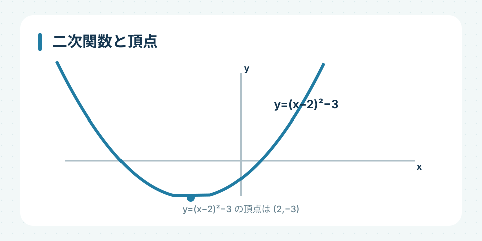

二次関数の最大値・最小値
大学入試の二次関数では、頂点の位置と定義域の端点を比較するのが基本です。グラフをイメージして、値を正確に計算しましょう。
このページで学べること
平方完成と定義域を使いこなす。要点を読んだら、最後の確認問題で理解度をチェックしましょう。
まず平方完成

二次関数 y = ax² + bx + c は y = a(x − p)² + q の形に直します。頂点は (p, q)、軸は x = p です。
y = x² − 4x + 1 = (x − 2)² − 3
上に開く放物線で、頂点 (2, −3) に最小値 −3 があります。定義域があるときの手順
- 平方完成して頂点の x 座標を求める。
- 頂点が定義域に入るか確認する。
- 定義域の両端の値を必ず計算する。
- 候補を比較して最大・最小を決める。
y = x² − 4x + 1 = (x − 2)² − 3
頂点 x = 2：y = −3 ／ x = 0：y = 1 ／ x = 3：y = −2
最小値 −3（x = 2）、最大値 1（x = 0）。よくあるミス
「上に開くから最大値はない」と考えるのは、定義域が実数全体の場合に限ります。区間が有限なら最大値も存在します。また、頂点が区間外にある場合、最小値が端点に現れます。
確認問題に挑戦！
全3問。答えを考えてから「解答と解説を見る」を押してね。
y = x² − 6x + 7、0 ≦ x ≦ 5 の最大値・最小値は？
解答と解説を見る ＋
最大値 7（x = 0）、最小値 −2（x = 3）
y = (x − 3)² − 2。候補は x = 0 → 7、x = 3 → −2、x = 5 → 2。
y = −x² + 4x + 1、0 ≦ x ≦ 5 の最大値・最小値は？
解答と解説を見る ＋
最大値 5（x = 2）、最小値 −4（x = 5）
y = −(x − 2)² + 5。両端は y(0)=1、y(5)=−4 です。
y = 2(x + 1)² − 3、−2 ≦ x ≦ 2 の最小値は？
解答と解説を見る ＋
−3（x = −1）
上に開き、頂点 x = −1 が定義域内にあるので頂点の値が最小です。
閉区間での最大・最小は、頂点と端点の値を「計算して比較」する。
ここまで読めたら、ひと区切り。
理解できたら学習済みにチェックして、次の記事へ。
StudyMasterの無料学習コンテンツです。AIを補助的に用いて作成しています。例題・解答は公開前にご自身でも確認してください。内容に誤りがある場合は、学校の教科書などと照合してください。
公開・更新：2026年11月12日